DeepLense · GSoC 2025 evaluation task · March 2025
Vision Foundation Model for Strong Lensing
One self-supervised backbone, pretrained on unlabelled lensing images, then fine-tuned to two very different jobs — classifying dark-matter substructure and upscaling low-resolution observations.
Context
The way a galaxy distorts the light of whatever sits behind it encodes how dark matter is distributed in the lens. Different dark-matter models leave different fingerprints in that distortion — cold dark matter produces clumpy substructure, axion-like particles produce something subtler — so the images carry a signal about physics that no catalogue records directly.
The practical difficulty is labels. Simulated lensing images are cheap to produce in bulk; carefully labelled ones are not. That is exactly the shape of problem self-supervised pretraining is meant for: learn the structure of the data from unlabelled examples first, then spend the scarce labels on adapting that representation rather than on learning to see from scratch.
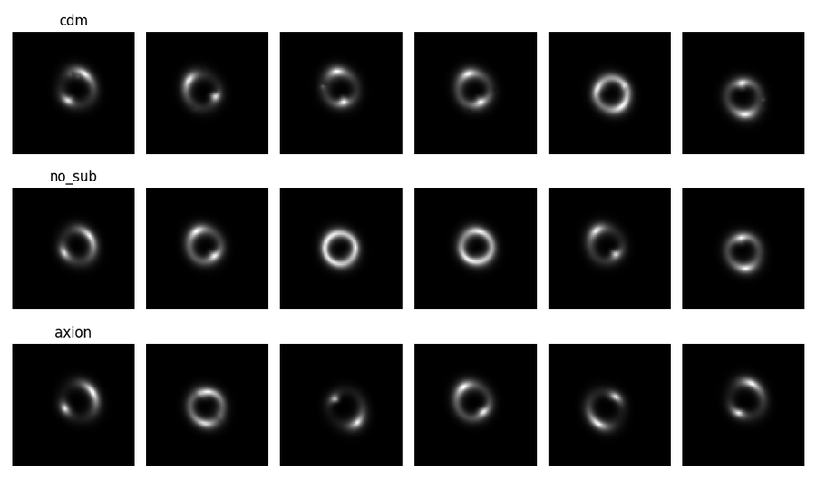
Approach
Masked autoencoder pretraining
A Vision Transformer backbone with a reconstruction head, trained only on no_sub samples. Each image is cut into patches, most of them are hidden, and the model is asked to reconstruct what it cannot see from what it can. Nothing about substructure classes is used at this stage.
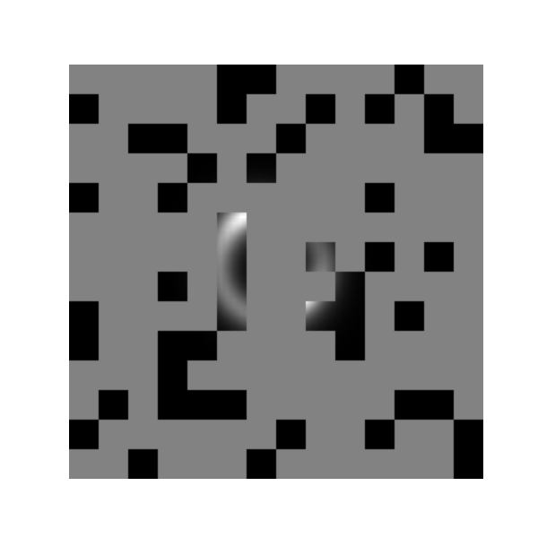
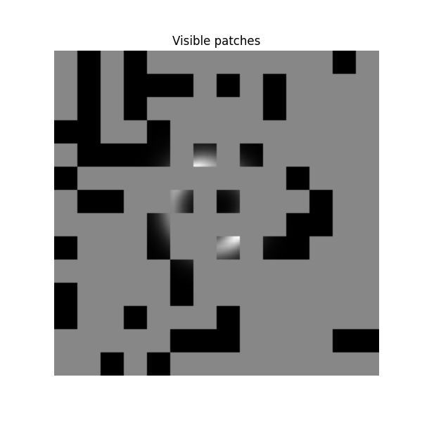
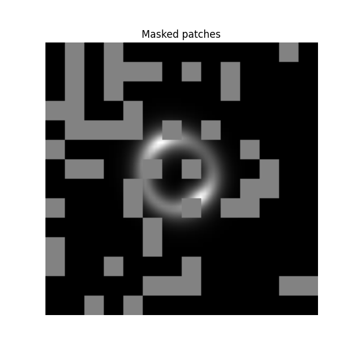
Two fine-tuning heads
The pretrained encoder is then reused twice. For classification, a head over the encoder output separates no-substructure, cold dark matter and axion, trained with cross-entropy. For super-resolution, the same backbone is fine-tuned to map low-resolution inputs to high-resolution ground truth under an MSE objective.
| Stage | Objective | Optimizer | Batch |
|---|---|---|---|
| MAE pretraining | MSE reconstruction | AdamW | 256 |
| Classification | Cross-entropy | AdamW | 256 |
| Super-resolution | MSE | AdamW | 256 |
Results
What pretraining learned
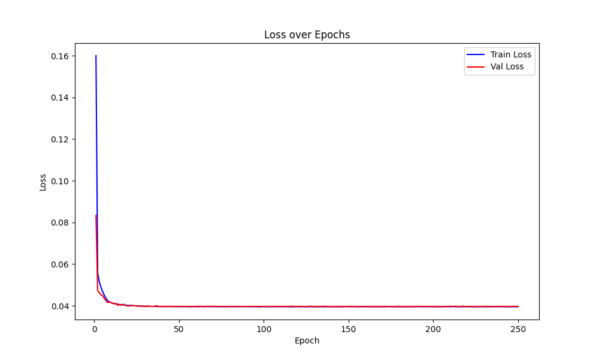
Classification
Validation AUC reaches 99.67% and overall accuracy 0.97 across the three classes. Per-class precision and recall stay within a point or two of each other, so no class is being carried by the others.
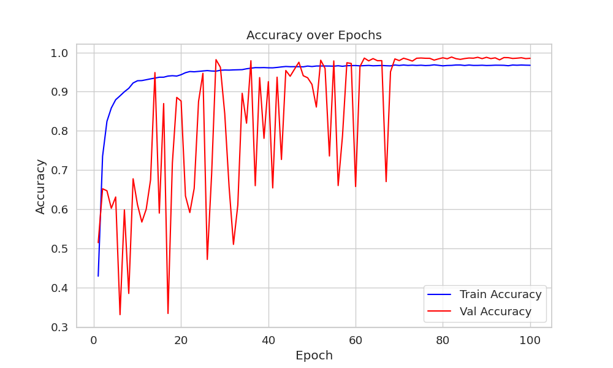
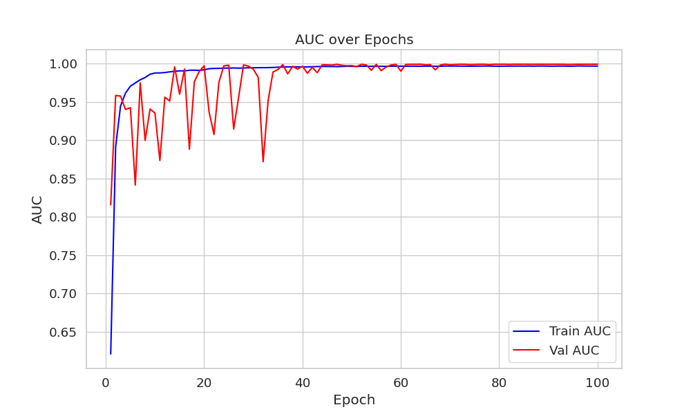
| Class | Precision | Recall | F1 | Support |
|---|---|---|---|---|
| No substructure | 0.97 | 0.99 | 0.98 | 2945 |
| Axion | 0.98 | 0.97 | 0.97 | 2990 |
| Cold dark matter | 0.97 | 0.95 | 0.96 | 2976 |
| Overall accuracy | 0.97 | 8911 |
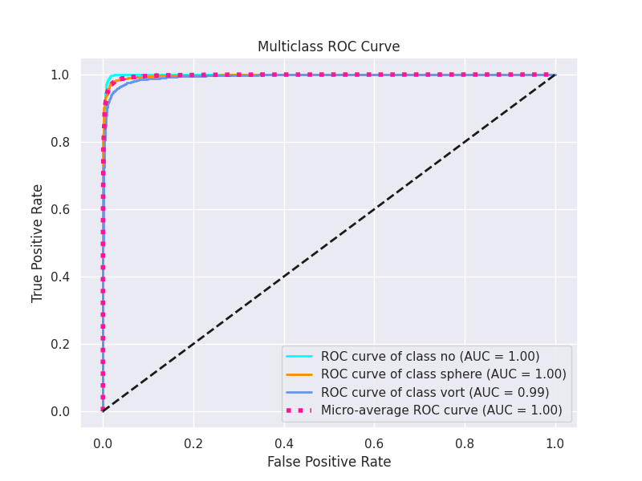
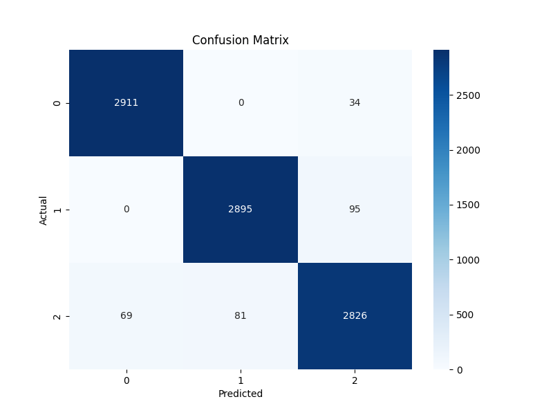
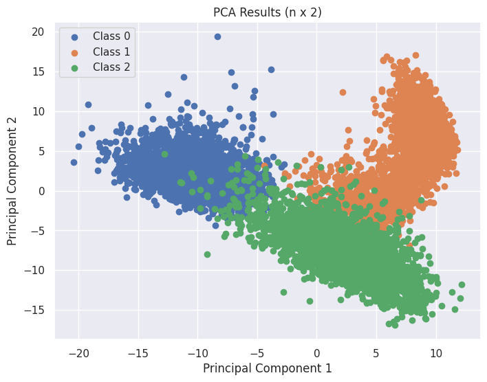
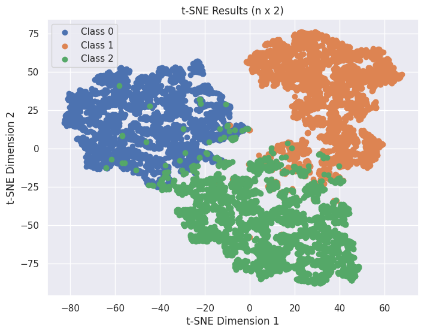
Super-resolution
Final validation MSE 0.002293, PSNR 29.62 dB, SSIM 0.919. For reference, PSNR above 30 dB is generally considered good; SSIM weights structural agreement and tracks human judgement more closely than either MSE or PSNR.
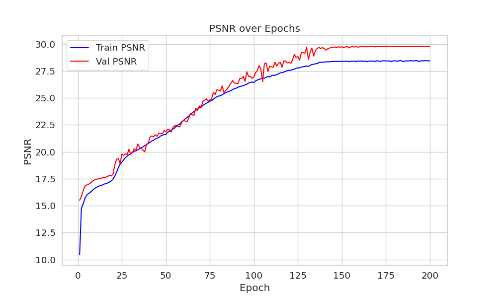
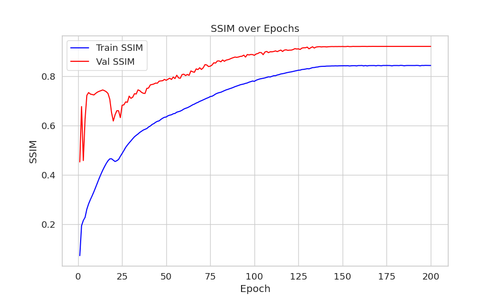
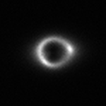
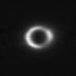
Limitations
- The decoder is the wrong tool for super-resolution. An MAE decoder is built to reconstruct masked patches, not to synthesise detail at higher resolution. It works here, but a purpose-built upsampling decoder would almost certainly do better, and the 29.62 dB figure should be read as a floor rather than a ceiling.
- Pretraining used only
no_subsamples, so the representation never saw substructure during self-supervision. Whether including the other classes helps or leaks is untested. - Results are on simulated data. Real observations bring noise, PSF variation and selection effects that none of this accounts for.